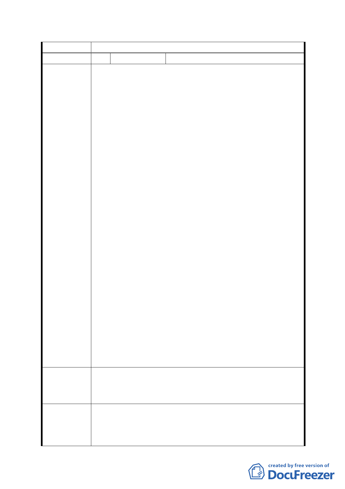

委員會決議 同意依「市府修正後回應說明」辦理
編 號 47 陳情人
陳成德、陳暄昀、劉麗真等11人
1.陳情人等所有臺北市文山區公訓段二小段 16、19、20、
21、22、43、44、45、46、47、48、52 地號等 12 筆土地
位於臺北市辛亥路與萬美街口之國高中預定地附近，臺北
市政府工務局水利工程處擬於該區域規劃設置防洪調節
池，將防洪調節池納入「變更臺北市辛亥國、高中用地主
要計畫案」內。
2.本人等首揭土地部分位於該變更計畫內，部分緊鄰該變更
計畫案，該區土地 58 年 4 月 28 日規劃為國中用地（公共
設施用地）（取得方式：徵購及其他）。77 年 12 月 9 日臺
北市政府公告徵收，並於 78 年 1 月 20 日領取徵收補償
費，但臺北市政府徵收土地卻未依核准計畫使用，故陳情
人等於 86 年間申請發還土地並繳還已受領之補償費予臺
北市政府教育局，臺北市政府教育局於 88 年 2 月 11 日辦
竣發還登記在案。
陳 情 理 由 3.今臺北市政府擬將在這片國中用地上規劃防洪調節池，民
等為大眾利益著想亦願配合，因公訓段二小段 16、19 地
號處於較陡坡路段，期望市府不要只針對平面土地作徵收
考量，16、19 地號也是當初規劃為國中用地被徵收之範
圍；該土地市府也佔土地 5/7 之主要面積，所以陳情期望
能將 16、19 地號也一併計入徵收規劃範圍中。
4.政府在規劃所謂公共設施用地或保護區用地時，是否也應
尊重民等私有財產權益方面考量，從一開始徵收作國中用
地，到我方再買回用地，當初在規劃徵收用地上是否有欠
缺考量的地方，雙方不只是耗損了經濟價值，同時也耗損
了寶貴的時間，如此，中華民國憲法應該保障人民生命、
財產的安全來思考，我們配合政府徵收土地，是否也應獲
得官方的尊重對待，即便是徵收為做保護區之用，是否也
應照徵收補償方案來辦理，才合乎憲法保障人民生命財產
安全的精神。
敬盼！市府給予民等合理之回覆。
建議辦法
敬盼！市府將民等首揭土地一併徵收規劃讓土地達到最有
效利用，並維護民等之權益及大眾之利益，亦可減少民怨及
抗爭。
1.依本案計畫原則，坡度陡峭（即平均坡度超過 30％）之山
市府修正後 坡地，基於生態維護及水土保持，變更為保護區；坡度平
回 應 說 明 緩（即平均坡度不超過 30％）之土地，劃為公園用地。
查陳情位址（本市文山區公訓段二小段 17、19 地號土地）
- 42 -